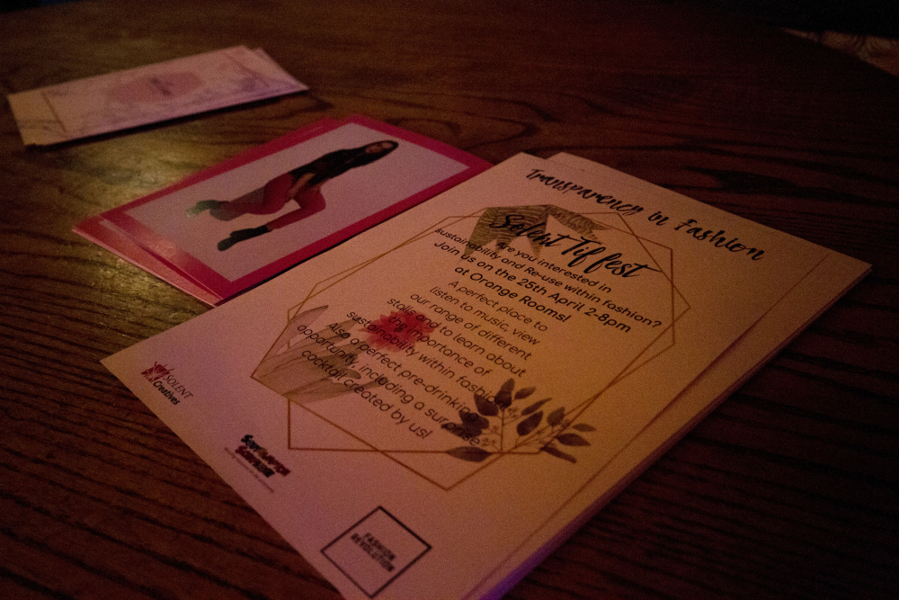
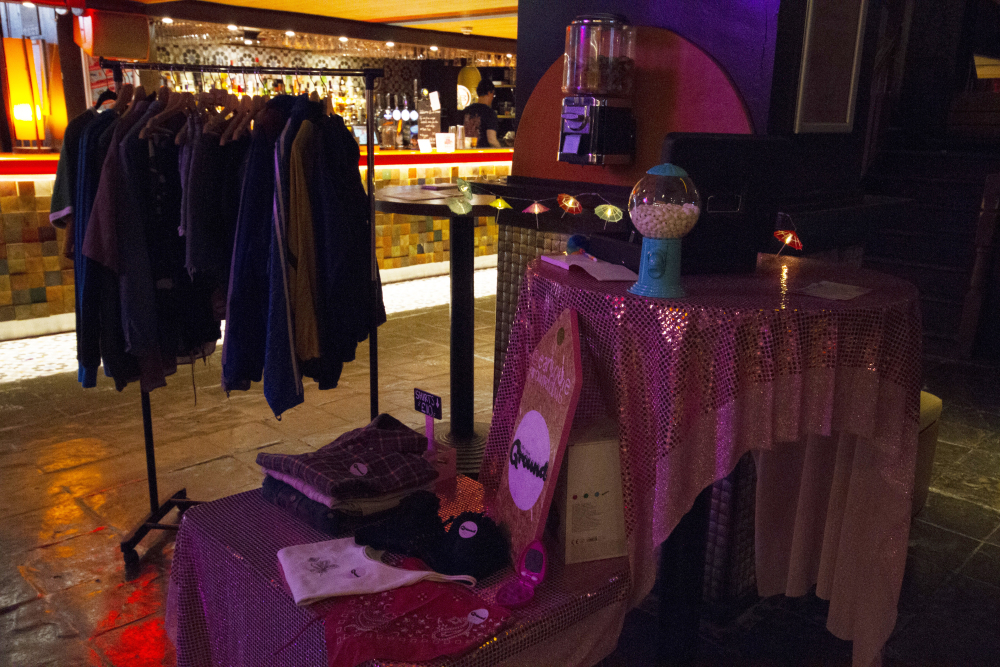
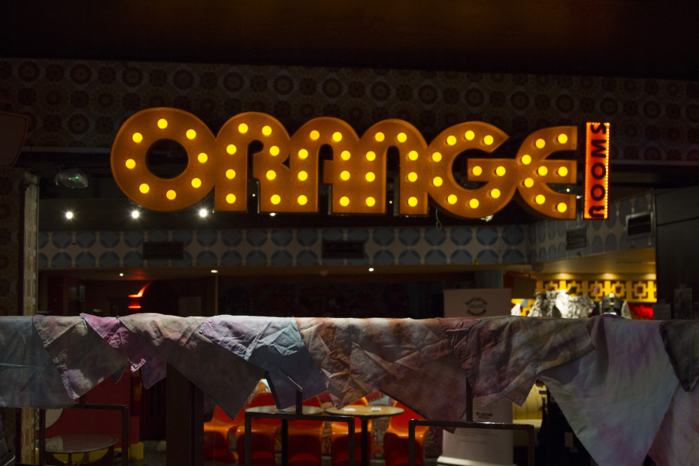
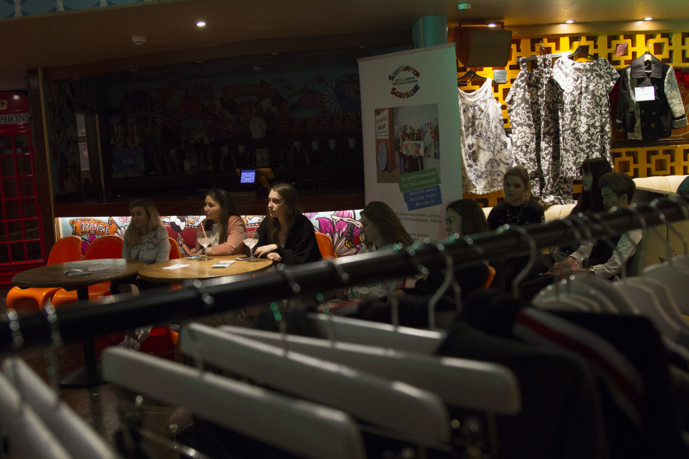

Public Relations

Organising a live charity fundraiser, an event focused on sustainability, with collaborators, workshops and guest speakers, named the Transparency in Fashion Festival.
My role revolved around organisation and client liaison, as well as meeting with our charity Southampton ScrapStore. The idea was to create an environment where people can interact with stalls and have a drink, somewhere in the heart of Southampton in the late afternoon to attract the charity’s main cliental.
We included several student brands and projects to help gain exposure for their work, as well as two limited edition cocktails created by our team, provided by Orange Rooms where the event was held. We outsourced an expert in sustainable fashion to do a talk for the audience which was received really well.
We had a social media channel and a hashtag to raise awareness for the event, and put up an installation in The Spark on the Solent University campus to gain more exposure for the event. We also produced a film with footage of the event
  